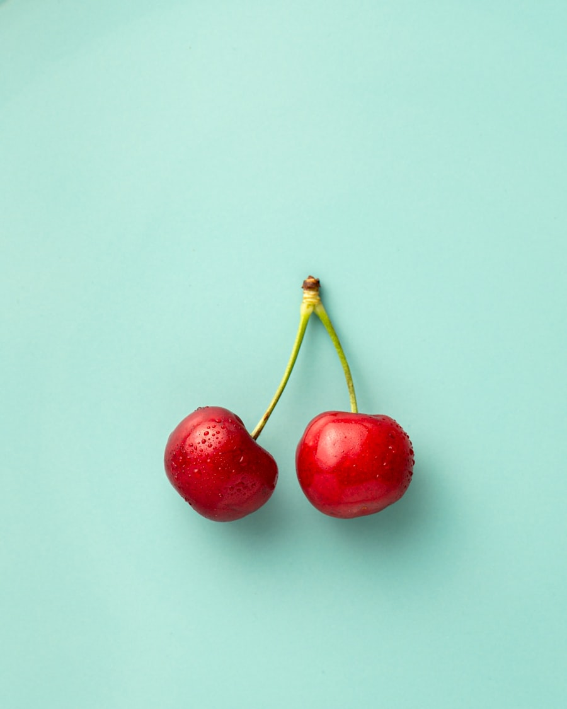

O Ritual
Conceito
Na tradição gastronômica francesa, a manteiga não é um mero acompanhamento — é o primeiro gesto de hospitalidade à mesa. O ritual de servir manteiga é uma declaração de cuidado, atenção aos detalhes e respeito pelo convidado.
A Savoyard resgata e reinterpreta esse ritual, transformando-o em uma assinatura da marca e em uma experiência que diferencia estabelecimentos que valorizam a excelência.
História
A manteiga ocupa lugar central na gastronomia europeia há séculos. Nas abadias medievais da Normandia, monges aperfeiçoaram as técnicas de produção que até hoje são referência mundial.
Na França do século XVIII, servir manteiga fresca com pão tornou-se símbolo de refinamento. Os grandes restaurantes parisienses elevaram o gesto a ritual — com utensílios dedicados, temperaturas controladas e apresentações elaboradas.
A Savoyard traz essa tradição secular para o contexto brasileiro contemporâneo, adaptando-a com sensibilidade e autenticidade.

Técnica
A manteiga deve ser servida entre 14°C e 16°C — fria o suficiente para manter a forma, quente o bastante para ser untável e liberar seus aromas.
Mantegueira de cerâmica ou mármore. Faca dedicada com lâmina larga. A apresentação comunica respeito pela matéria-prima e pelo convidado.
Porções individuais moldadas, quenelles ou rosinhas. A manteiga pode ser apresentada sobre gelo picado, folhas ou tábuas de madeira nobre.
Para estabelecimentos
A Savoyard oferece consultoria para restaurantes e hotéis que desejam implementar o ritual da manteiga como diferencial de experiência para seus convidados.
Solicitar consultoria